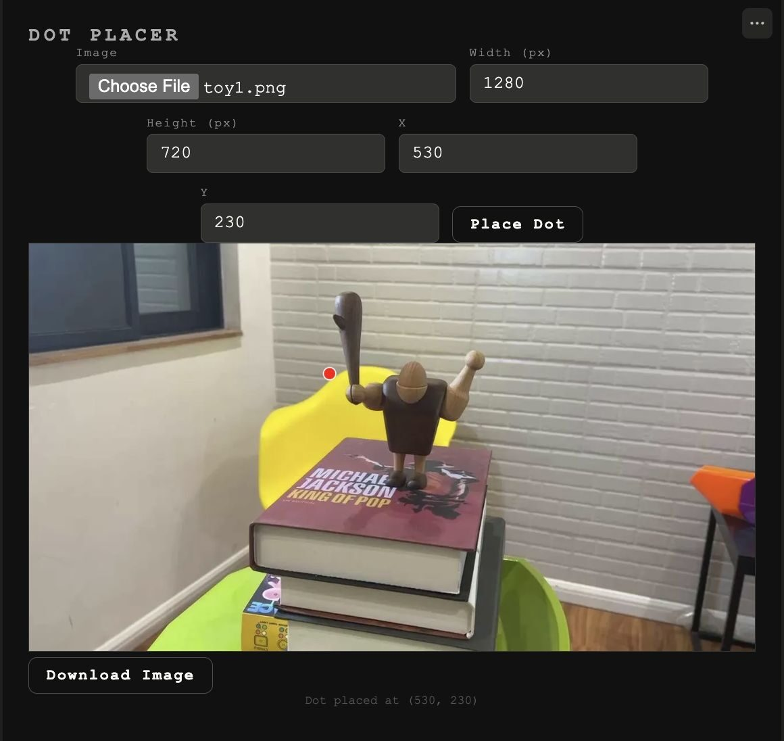
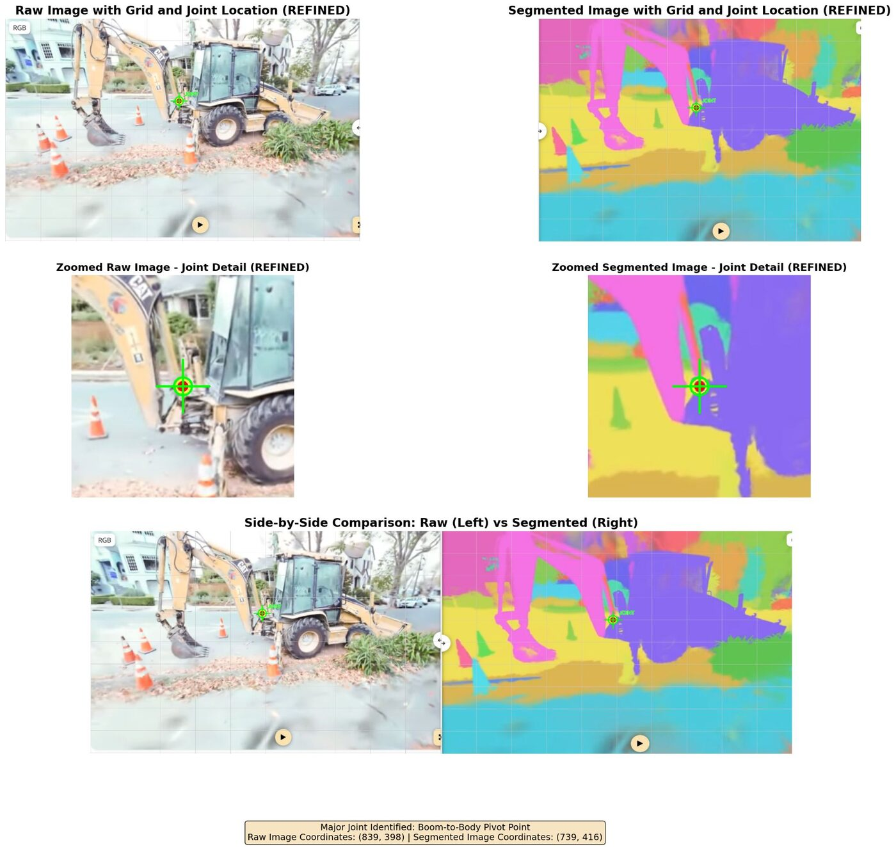
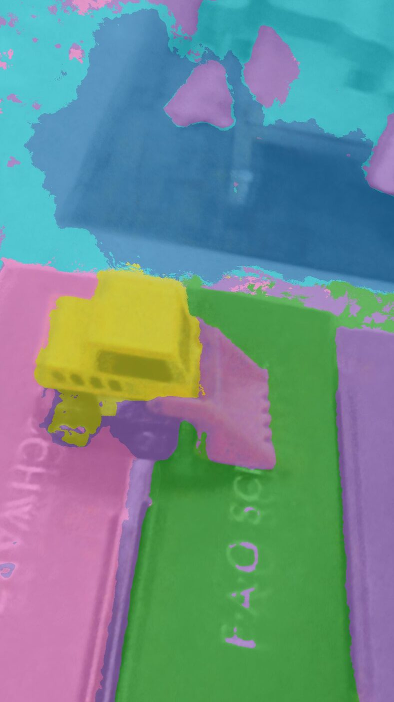
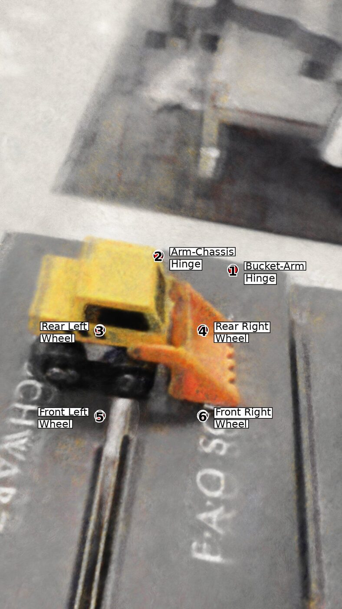

VLM Joint & Articulation Prediction

Overview
To manipulate an articulated object (a laptop lid, a cabinet door, a pair of scissors) a robot first has to know where the object's joints are and how they move. This project asks how well vision-language models (VLMs) can answer that question, and what kinds of input help them answer it precisely.
The short answer so far: VLMs understand objects well, but are poor at giving accurate locations for joints. Most of the work has been about closing that gap.
Baselines: Articulate Anything and POD
- Set up Articulate Anything, which builds articulated models for 46 everyday object categories (boxes, cabinets, laptops, scissors, doors…), and tested it on objects outside those categories, like a toy tractor and a teddy bear, to probe its limits.
- Set up POD (Predict-Optimize-Distill) to get a 3D rendering that VLM-predicted coordinates could be checked against.
- Tested a VLM (Claude) on a scissors image: it correctly reasoned that the two blade-and-handle halves rotate about a single pivot, but its pixel coordinates for the pivot were off.
- Built a small “dot placer” tool to plot predicted joint coordinates back onto the image and validate them by eye.

Making joint prediction more accurate
- Grid overlay + self-check prompt. Asked the VLM to draw a coordinate grid on the image, plot each joint as a dot, then check whether every dot is in the right place and refine it.
- Segment first. Fed the VLM part-segmented images (both medium and fine segmentation levels) alongside the raw image, so joints can be placed at boundaries between parts.
- Zoomed refinement. Compared raw vs. segmented crops around each joint to refine its coordinate.

Moving to 3D: GARField and LangSplat
- Filmed a toy truck, processed it with COLMAP, and trained both the NeRF and Gaussian Splatting variants of GARField (Group Anything with Radiance Fields), which segments a 3D scene into a hierarchy of parts using SAM and a learned affinity field.
- Clustered 167k Gaussians into ~50 semantic parts and identified joint candidates at part boundaries.
- Began setting up LangSplat, which distills CLIP language features into the splat so the scene can be queried with text directly in 3D.


Next steps
- Finish LangSplat training and query the scene with joint-related prompts (“wheel axle”, “hinge”, “rotating arm”).
- Compare VLM joint-reasoning accuracy given (1) a single segmented image, (2) multi-view segmented renders, and (3) structured 3D data from GARField + LangSplat.
- Predict each joint's axis of rotation by casting a ray from the 2D point into the 3D object.